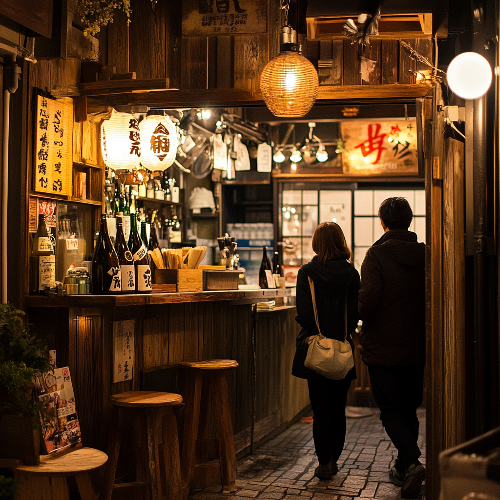

Popular Izakaya Terms#
Overview#
In this lesson, we will focus on the essential greetings and introductions that you will need to know when dining at a Japanese restaurant. Proper greetings and introductions are crucial in Japanese culture, as they show respect and politeness towards others. By mastering these basic phrases, you will be able to navigate through the restaurant environment with confidence and ease.
We will cover common phrases such as “Konnichiwa” (hello), “Arigatou gozaimasu” (thank you), and “Sumimasen” (excuse me). Additionally, we will discuss the importance of bowing as a sign of respect in Japanese culture. Understanding these greetings and introductions will not only enhance your dining experience but also help you connect with the staff and other patrons on a deeper level.
When dining at a Japanese izakaya, it’s essential to be familiar with some common terms that will enhance your dining experience. Izakayas are casual dining establishments where friends gather to enjoy drinks and small plates of food. Learning these popular izakaya terms will help you navigate the menu and understand the unique dining culture of Japan.
One important term to know is “otsumami,” which refers to the small dishes served at izakayas to accompany drinks. These can range from simple snacks like edamame and pickles to more elaborate dishes like yakitori and sashimi. Understanding the concept of otsumami will help you order a variety of dishes to share with your companions.
Another key term is “kanpai,” which is the Japanese word for cheers. When dining at an izakaya, it’s common for patrons to raise their glasses and say “kanpai” before taking a sip of their drink. This toast is a fun and social tradition that promotes camaraderie among diners. Embracing the custom of kanpai will help you feel like a true insider at the izakaya.
Key Lesson Concepts:
Learn key Japanese greetings such as “Konnichiwa” and “Arigatou gozaimasu.”
Understand the significance of bowing as a form of respect.
Practice using phrases like “Sumimasen” to communicate effectively in a restaurant setting.
Learn the meaning of “otsumami” and how it influences izakaya dining.
Understand the significance of “kanpai” and how to participate in the toast.
Enhance your izakaya dining experience by mastering these popular terms.
What is an izakaya?#
A Japanese izakaya (居酒屋) is a type of casual pub or bar where people gather to eat and drink, similar to a Western-style pub but with a unique Japanese twist. The word “izakaya” combines “i” (居), meaning “to stay,” and “sakaya” (酒屋), meaning “sake shop,” highlighting its origins as a place where people would sit down and enjoy drinks.
Characteristics of an Izakaya:#
Casual and Communal Atmosphere
Izakayas are relaxed, informal spaces popular among coworkers, friends, and families. After-work gatherings, known as “nomikai” (drinking parties), are especially common, as izakayas offer a laid-back environment for bonding outside of work.
Wide Variety of Food and Drinks
Izakayas serve a range of alcoholic drinks, especially beer, sake, and shochu (a traditional Japanese distilled spirit), along with soft drinks and teas. Food ranges from snacks to small, shareable plates, with dishes like yakitori (grilled chicken skewers), sashimi (raw fish), karaage (fried chicken), edamame (soybeans), and more.
The menu is often arranged so that groups can order several dishes to share, creating a lively, communal dining experience.
Ordering and Service Style
In most izakayas, food and drinks are ordered in rounds throughout the evening rather than all at once, making it easy to stay as long as you’d like. Each round often includes more drinks or small plates, adding to the social flow.
Staff might greet guests with an enthusiastic “Irasshaimase!” (Welcome!), and customers often call out “Sumimasen” (Excuse me) to get a server’s attention.
Toasting and Drinking Etiquette
Japanese izakaya culture places importance on kanpai (cheers), where everyone raises a glass together before starting to drink. Pouring drinks for one another is also common and shows respect and attentiveness to others.
Distinct from Restaurants
Although izakayas serve a variety of foods, the focus is on the combination of food and drink, rather than a formal meal. Food is often inexpensive, making izakayas an accessible option for quick bites or long gatherings.
Types of Izakayas#
Chain Izakayas: Often larger, more commercialized, with a broad menu catering to a variety of tastes. Examples are:
Kin-no-Kura Jr. (金の蔵Jr.)
Torikizoku (鳥貴族)
Tsubohachi (つぼ八)
Shirokiya (白木屋)
Watami (和民)
Traditional Izakayas: Usually smaller, family-run, offering a more personalized atmosphere and sometimes featuring local specialties.
Overall, izakayas are a staple of Japanese nightlife, offering a mix of delicious food, drinks, and friendly ambiance that makes them ideal for unwinding and socializing.
Common Etiquettes#
Japanese izakayas have a unique set of etiquettes that create a comfortable and respectful environment. Here are some key etiquette tips to keep in mind:
Entering the Izakaya
Greeting Staff: When you enter, the staff will typically say, “Irasshaimase!” (Welcome!). It’s polite to nod, smile, or respond with a simple greeting, although responding isn’t required.
Removing Shoes: At traditional izakayas, especially those with tatami seating, you might be required to remove your shoes. Look for shoe racks or lockers near the entrance.
Ordering Drinks and Food
First Round of Drinks: Typically, everyone orders the same drink for the first round, often a nama bīru (draft beer) or sake. This keeps the initial cheers and toast unified, though you’re free to choose different drinks in subsequent rounds.
Order as You Go: Unlike traditional restaurants, izakayas are all about gradual, social ordering. Instead of ordering everything at once, order drinks and food in rounds throughout the evening.
Toasting (“Kanpai”)
Wait for Everyone: Once drinks arrive, wait until everyone has their drink before saying “Kanpai!” (Cheers!). It’s polite to ensure everyone has their glass raised together before taking the first sip.
Pouring Drinks for Others: If drinking with colleagues or friends, it’s polite to pour drinks for others rather than your own. Hold the bottle with both hands when pouring, and show appreciation when someone pours for you.
Respectful Dining Habits
Shareable Plates: Izakaya food is usually served in shareable portions. Use the opposite end of your chopsticks (or communal chopsticks if provided) when taking food from shared plates.
Minimal Waste: Try to finish what you order, as leaving food behind is generally considered wasteful.
Getting the Server’s Attention
“Sumimasen!”: Unlike in some Western restaurants where servers check in frequently, at izakayas, you call the server over by saying “Sumimasen!” (Excuse Me) when you’re ready to order or need something.
Expressing Appreciation
Itadakimasu and Gochisousama: Although not strictly necessary, saying “Itadakimasu” (I humbly receive) before eating and “Gochisousama deshita” (Thank you for the meal) at the end of your meal is polite.
Commenting on the Food: Saying “Oishii” (delicious) shows appreciation for the food, and it’s always appreciated by the staff.
Paying and Exiting
The Bill (Okaikei): Most izakayas have a single check for the table, so people usually split the bill. If you need to pay separately, say “Betsu-betsu de onegaishimasu” (separate bills, please).
Thank the Staff: As you leave, it’s customary to say “Arigatou gozaimashita” (Thank you very much) to the staff. They may respond with a warm farewell.
Following these etiquette guidelines shows respect for Japanese culture and creates a smooth, enjoyable experience in the friendly and lively environment of an izakaya.
Vocabulary#
Common Expressions: Greetings and Introductions#
こんにちは (Konnichiwa) - “Hello/Good afternoon”
いらっしゃいませ (Irasshaimase) - “Welcome”. What staff typically say when you enter.
ご 予約はされているんでしょうか (Go yoyaku wa sarete irun deshou ka) – “Have you made a reservation?”
予約をしています。ジェイムズです (Yoyaku o shite imasu. Jeimuzu desu) – “Yes, I have a reservation. It is booked under the name James.”
すみません、予約してないのですが、空いていますか (Sumimasen. Go yoyaku shitenai no desu ga, aite imasu ka) – “Sorry, I haven’t made a reservation, but do you have any seats/space available?”
席は空いてますか (Seki wa aitemasu ka) - “Are there any seats available?”
何名様ですか (Nan mei sama desu ka) - “How many people?”
喫煙席、禁煙席のどちらに (Kitsuenseki, kinenseki no dochira ni) – “Would you prefer to sit in the smoking or non-smoking section?”
喫煙席をお願いします (Kitsuenseki o onegai shimasu) – “The smoking area, please.”
禁煙席をお願いします (Kinenseki o onegaishimasu) – “The non-smoking area, please.”
こちらへどうぞ (kochira e douzo) - “Please sit here” or “This way, please”
お席へ ご案内いたします (O seki e goanai itashimasu) – “I will show you to your seat.”
メニューになります (menyuu ni narimasu) - “Here is the menu.”
お決まりになりましたらお呼びください (Okimari ni narimashitara) - “Please call me when you’re ready to order”.
はじめまして (Hajimemashite) - “Nice to meet you”
よろしくお願いします (Yoroshiku onegaishimasu) - “Please treat me well”
注文をお願いします (Chūmon wo onegaishimasu) - “I’d like to order, please”
メニューを見せてください (Menyū wo misete kudasai) - “Please show me the menu”
ありがとう (Arigatou) - “Thank you”
Counting People#
ひとり (hitori) - 1 person
ふたり (futari) - 2 people
さんにん (san-nin) - 3 people
よにん (yo-nin) - 4 people
ごにん (go-nin) - 5 people
ろくにん (roku-nin) - 6 people
しちにん (shichi-nin) or ななにん (nana-nin) - 7 people
はちにん (hachi-nin) - 8 people
きゅうにん (kyuu-nin) - 9 people
じゅうにん (juu-nin) - 10 people
After 10, the pattern is simpler, combining the number + “nin” (e.g., 11 people is じゅうい ちにん (juu-ichi-nin)).
Role-Playing#
Scene 1: Entering the izakaya#
Characters:#
Customer A: A tourist excited to experience an izakaya.
Customer B: Customer A’s faithful friend who is equally excited and know some japanese customs.
Server: Welcomes and seats the guests.
Dialogue:#
Server: いらっしゃいませ！(Irasshaimase!) - Welcome!
Customer A: [Whispering to B] Did they say “Welcome”?
Customer B: Yeah! Let’s just smile and nod. [Smiles and nods to the server]
Server: 何名様ですか？(Nan-mei sama desu ka?) - How many people?
Customer B: 二人です。(Futari desu.) - Two people.
Server: どうぞこちらへ。(Douzo kochira e.) - This way, please. [Guides them to their table]

Scene 2: Meeting someone new at izakaya#
Characters:#
Person A: A visitor to japan.
Person B: A Japanese local.
Dialogue:#
[Person A and Person B meet each other and exchange a polite bow.]
Person A: はじめまして。アリスです。アメリカから来ました。よろしくお願いします。 (Hajimemashite. Arisu desu. Amerika kara kimashita. Yoroshiku onegaishimasu.) - Nice to meet you. I’m Alice. I’m from the United States. Please treat me well.
Person B: こちらこそ、はじめまして。田中です。日本へようこそ！よろしくお願いします。 (Kochira koso, hajimemashite. Tanaka desu. Nihon e yōkoso! Yoroshiku onegaishimasu.) - Likewise, nice to meet you. I’m Tanaka. Welcome to Japan! Please treat me well.
Quiz#
Multiple Choice Quiz#
Type-out Quiz#
For this quiz, your keyboard must be able to type hiragana and katakana. The quiz is NOT using kanji characters.